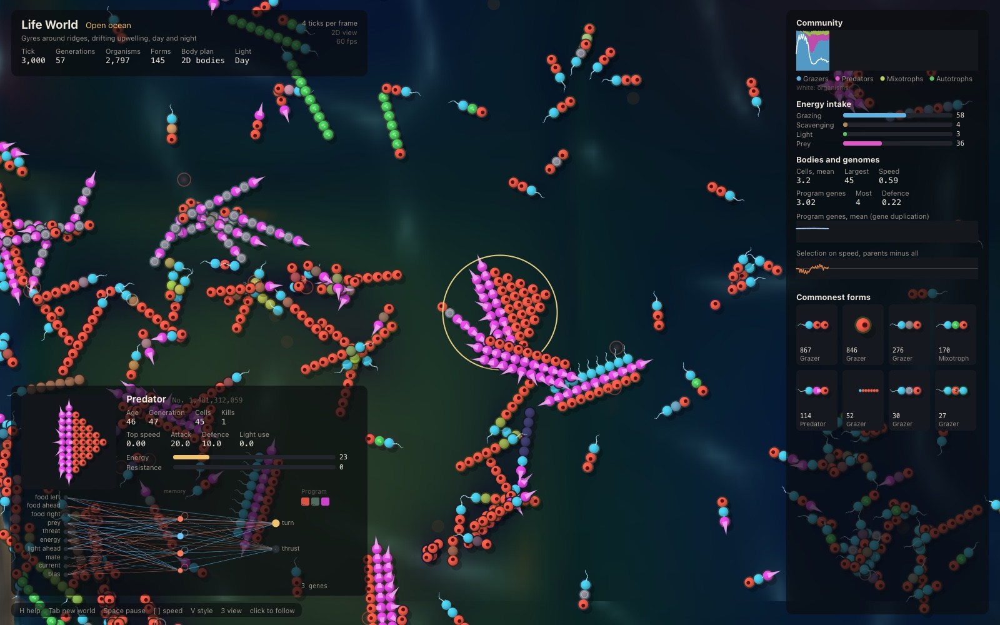
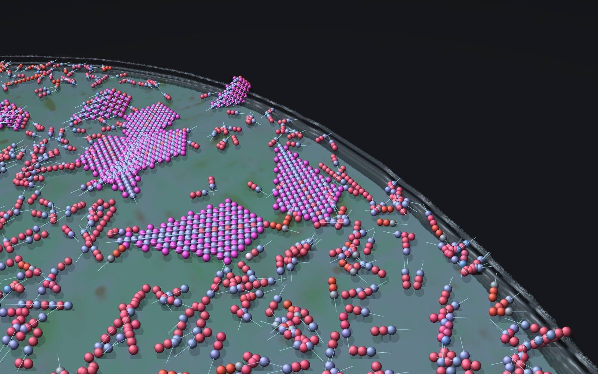
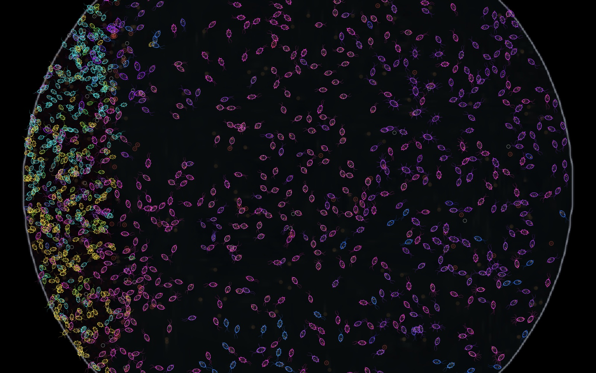
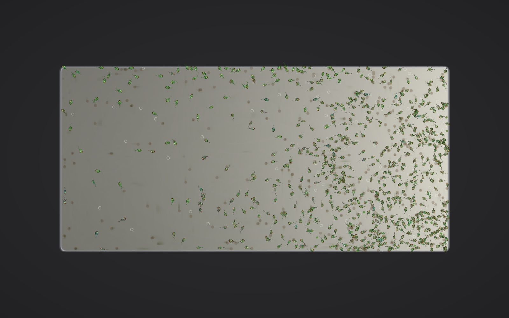
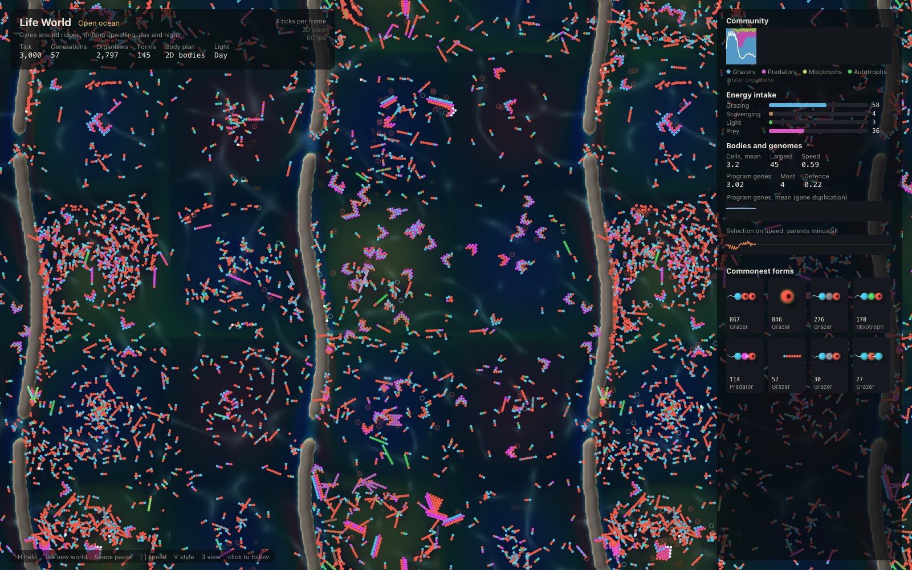
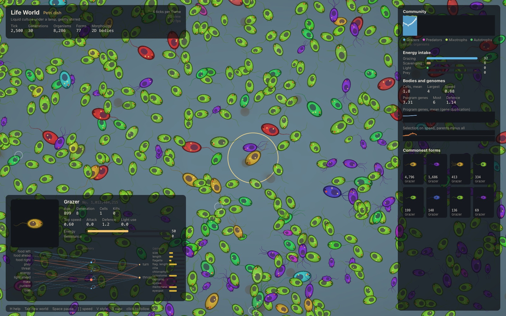

Organisms that grow from their genomes, live in an ocean or a laboratory dish, and evolve. Written in Flow; runs full screen.
The open ocean, following one organism. Motors beat their flagella, eyes look ahead, spikes point out. Specks are marine snow carried by the currents.
Each organism is diploid. Its genome holds a developmental program, a brain and a set of morphological and physiological traits. A body grows from one cell by that program; the brain turns what it senses into turning and thrust; the body sets what it can eat, how fast it swims, how well it fights and what it costs to run. Organisms that gather enough energy breed, their genomes recombine and mutate, and lineages evolve.
What they become is left to evolution. The founders are a three-cell grazer. Predators, armour, eyes, photosynthesis, new body plans and longer developmental programs appear only if they evolve.
The same repository holds the Genomic World, a population-genetics simulator on the same engine whose genetics are checked against theory: drift, mutation-selection balance, linkage decay, selection and fixation, 14 checks, all within tolerance.

Cells of eight types grown from a program of cell-identity genes: mouths, motors, eyes, armour, spikes, stores, photosynthetic cells. Genes duplicate and diverge, so the number of cell kinds is open.
One cell built as a protist is. Size, shape, pigment, flagella, cilia, spines, membrane, eyespot, cytostome, raptorial organelles and chlorophyll are genes, and they set both how it looks and what it can do.

The multicellular body, each cell sized, tinted and made better or worse at its job by the morphological genes. Bodies can grow in two dimensions or three.
The 3D view ray-marches the terrain so ridges and dish walls stand up, and draws every body cell as a lit sphere. The camera orbits and follows.
The open ocean has gyres around ridges, upwelling that drifts, day and night. The laboratory presets are simplified versions of published experiments, so a run can be held against what happened in the real one.
Two neutral strains spread from a drop. Cells hardly move on agar, so the colony grows at its edge, where few cells found each new patch.
Hallatschek, Hersen, Ramanathan and Nelson (2007), Genetic drift at expanding frontiers promotes gene segregation. PNAS 104: 19926.
The strains separate into sectors at the edge, by drift alone.
A long plate with antibiotic in bands rising toward the middle, inoculated at both ends, under bright-field.
Baym, Lieberman, Chase, Gross and Kishony (2016), Spatiotemporal microbial evolution on antibiotic landscapes. Science 353: 1147.
Mean resistance rises from 0.003 to 0.29 in 2,000 ticks and levels near 0.39; the most resistant cells reach the highest band and the population covers the plate.

A raptorial predator and its prey in a small dish, in dark-field. In one version, sediment at the left edge hides prey.
Gause (1934), The Struggle for Existence.
Without the refuge, predators boom, prey crash, and both are extinct by tick 14,838, as Didinium ate every Paramecium and then starved. With it, prey crowd into the sediment.

A slide lit from one end, on poor medium. Cells sense the light gradient along their heading and can steer by it.
Green cells gather toward the lamp and stay there: a mean position of 172 to 185 along the slide, where 128 would be no bias, from tick 2,000 to 11,000.

A 2D incompressible flow drives food and drifters around ridges and through passes; current strength cycles and the upwelling moves, so what a body needs keeps changing.
Predators appear within 2,000 ticks and settle between 2 and 16 percent of the population.

Liquid culture under a lamp. A serial-transfer version moves a tenth of the population to fresh medium every 600 ticks.
Lenski, Rose, Simpson and Tadler (1991), American Naturalist 138: 1315.
Needs Flow 2.0 with the flowc C backend, a C11 compiler, and macOS for the window and the renderer's typography. Homebrew libomp makes the parallel loops use every core.
./run.sh life the life world, full screen ./run.sh life-bench headless: forms, trophic roles, energy, selection ./run.sh shot headless renders (settings in life_shot.flow) ./run.sh test tests, determinism, validation against theory ./run.sh the Genomic World
| Key | Action |
|---|---|
| Tab | Choose a world: preset, mode, 2D or 3D bodies |
| Space | Pause |
| [ ] | Fewer or more ticks per frame |
| wheel, drag | Zoom and pan; in 3D, right-drag turns |
| click | Follow an organism; Esc lets go |
| 3 | 2D or 3D view |
| V | Natural, bright-field or dark-field |
| F | Show the flow |
| G | Quality: fast, balanced or full resolution |
| H | Every key |